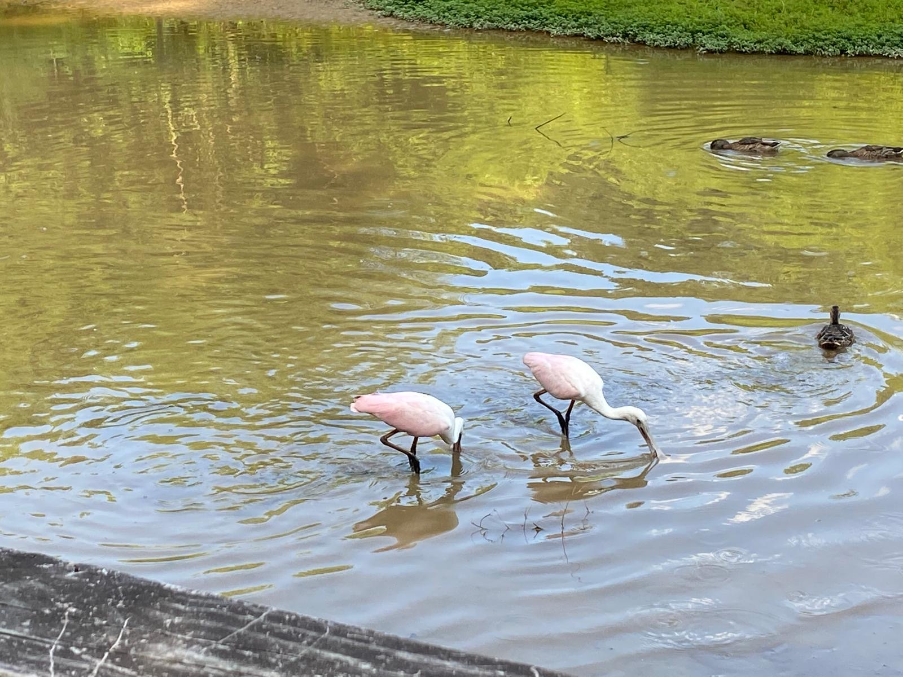

Key
Amazon River Dolphin
Roseate Spoonbill
Zebra
Amazon River Dolphin
Roseate Spoonbill
Zebra
Roseate Spoonbills are usually found in the Southeastern coast of the US and around Central to South America. Most spoonbills migrate short distances often due to changes in food and water levels. They are pale, pink birds and the end of their bill flattens into a spoon-like shape, hence the name spoonbill.

Challenges faced during migration: Habitat loss, climate change, and predators
Fun Fact: This picture was taken by our very own Coach Tania right infront of her house, at Lake Lynn, Raleigh NC!
During the dry season, the Amazon River dolphins occupy the main river channels in the Amazon. During the rainy season, they migrate to smaller tributaries in the forest and floodplains.

Challenges faced during migration: Habitat loss, pollution/litter in the ocean, entanglement in fishing gear, and human activities

Fun Fact: Some of the fish species that are commonly consumed by pink river dolphins include piranhas (yikes!), catfish, characins, and tetras.
Zebras migrate to Botswana, the Makgadikgadi, and the Serengeti National Park. They travel in the rainy seasons and go around 2,900 miles, occupying many geographical areas.

Zebras face many challenges on their journey of migration:
1. Predators:
- Hyenas
- Cheetahs + Leopards
- Crocodiles
2. Lack of water
3.
Navigating obstacles such as human activities
Fun Fact: Zebras' stripes create tiny air currents that help cool them down, like natural air-conditioning!